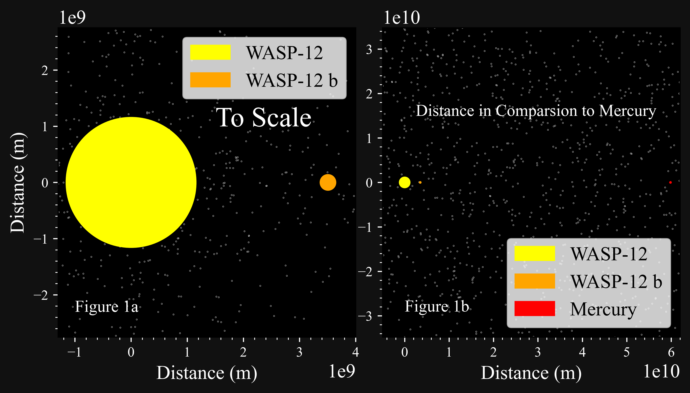

Under Prof. Alex Filippenko, Mentored by Kishore C. Patra
Hot Jupiters
Most of my time within the Filippenko Lab, I have worked on detecting tidal orbital decay of Hot Jupiter systems. As the name suggests, these exoplanets that roughly the massive of one Jupiter which orbits around its host star approximately one day. Due to tidal forces, instead of a spherical shape, it distorts the exoplanet to a shape of an egg. There also exists a bump on the surface of the star. However, the bump on the star does not align with the planet and lags behind a little bit. This has interesting consquences for this system.

Figure 1a: To-scale diagram of the WASP-12 system.
Figure 1b: Same as Figure 1a but with Mercury included. Note that Mercury would be smaller than 1 pixel on this scale.
Because there is a lag, it causes the bump to tug back on the planet, making it lose some of its angular momentumt and transfering back to the host star. The efficiency of this energy transfer is called the "tidal orbital factor" (\(Q_{\star}'\)). This is a measurement of how well the star and the planet are converting their energy into heat due to the tidal effects. It is hard to calculate \(Q_{\star}'\) from first principles since it requires a solid foundation of the theory of tides- which is a poorly understood. So, by providing observational evidence of which systems are undergoing tidal orbital decay, we can figure out what makes these systems are so unique and the underlying mechanics for tidal orbital decay.
In this study, we observed several Hot Jupiter systems: WASP-12 b, WASP-43 b, WASP-103 b, HAT-P-23 b, KELT-16 b, WD 1856+534 b, and WTS-2 b. So far, WASP-12 b is the only confirmed system that is undergoing tidal orbital decay- though there have been hints. Our goal is to find if any of these systems display the same phenonemon. Though using the transit timings, we were unable to conclusive say that they are with the exception of WASP-12 b. Erring on the side of caution, we see that WD 1856+534 b might be a case of orbital growth.
We attempt to provide a new method of detecting orbital decay. Instead of using a method of transits, we provide models to use for radial-velocity (RV) data. In theory, this method would take less time assuming opposed to the method of transits. For a WASP-12-like system, we would be able to detect orbital decay in 3 years if the precision is roughly 1 m/s. Currently, RV measurements and precisions are unable to detect orbital decay in any of the systems that we studied.
Scientific Products:
As promised, here is my proster presentation from the 2023 Koret UC LEADS Research & Leadership Symposium.